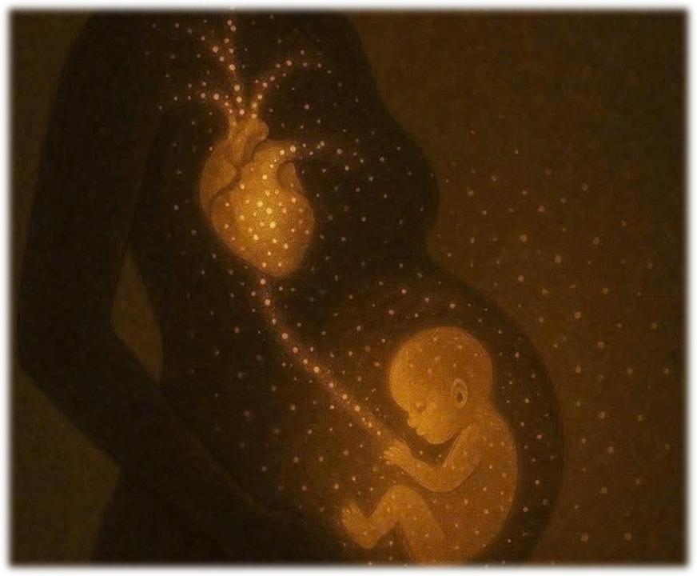

How does the baby affect the mother?
Pregnancy is not only a physical process, but also an emotional and psychological journey. Carrying a child requires major sacrifices from the mother and can affect every part of her life. A study published byHow does the mother affect the baby?
During pregnancy, the baby depends entirely on the mother’s health, nutrition,
mental state, and environment. Stress, unhealthy habits, or lack of care can directly affect the child’s development.
A Simple example on this
The study by Claudia M. Buss in 2012,
it shows that there’s a connection between a woman’s higher cortisol levels and how the baby’s brain develops.

This raises an important question: should every person automatically be considered ready for such responsibility?
